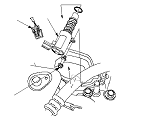
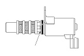
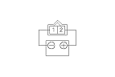
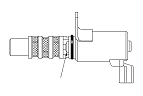
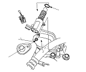

VTC Oil Control Solenoid Valve Removal/Test/Installation
Disconnect the VTC oil control solenoid valve 2P connector (A).
Remove the bolt (B) and the VTC oil control solenoid valve (C).
Check the VTC oil control solenoid valve strainer for clogging. If the strainer is clogged, replace the VTC oil control solenoid valve.

Note the amount of valve opening by observing the position of the piston shoulder (A) through the valve retard drain port. If you see the shoulder of the piston, the valve is open and must be replaced.
Closed

Connect the battery positive terminal to VTC oil control solenoid valve 2P connector terminal No. 2.

Connect the battery negative terminal to VTC oil control solenoid valve 2P connector terminal No. 1.
Appearance of inner valve (A) in the port should be at least 1.2 mm (1/16 in.). If the inner valve does not open, replace it; then go to
Step 8
.
Open

Replace the VTC valve O-ring (A).
Coat a new O-ring with engine oil, then install it.
Clean and dry the mating surface of the valve.
Install the valve.
NOTE: Do not install the valve while wearing cloth fibrous gloves. Be careful not to contaminate the cylinder head opening.
